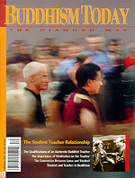

You can order this issue from the Diamond Way USA Dharma Shop.
Number 10 — 2001
Focus: The Student Teacher Relationship
The Qualifications of an Authentic Buddhist Teacher
Kunzig Shamar Rinpoche
The Connection Between Lama and Student
Gyaltrul Rinpoche
Student and Teacher in Buddhism
Lama Ole Nydahl
The Transparent Lama
The Black Crown
Excerpts from Entering the Diamond Way
Lama Ole Nydahl
The Importance of Meditation on the Teacher
Manfred Seegers
Rechungpa - Milarepa's Moon-like Student
Paul Waibl
Features
The Intermediate States, Part III: The bardo of Clear Light
Lopon Tsechu Rinpoche
Practicing the Dharma
Jigme Ripoche
Columns
PRACTICE: Guru Yoga Meditation on the 16th Karmapa
DHARMA: The Method of Practice on the Lama
VIEW: Obituary for the Buddhas of Bamiyan
Departments
EDITORIAL
CENTERS: International Spotlight
NEWS: New Stupa in Virginia
BOOK REVIEW: Mark Epstein's Going on Being
GLOSSARY: Basic Buddhist Terms